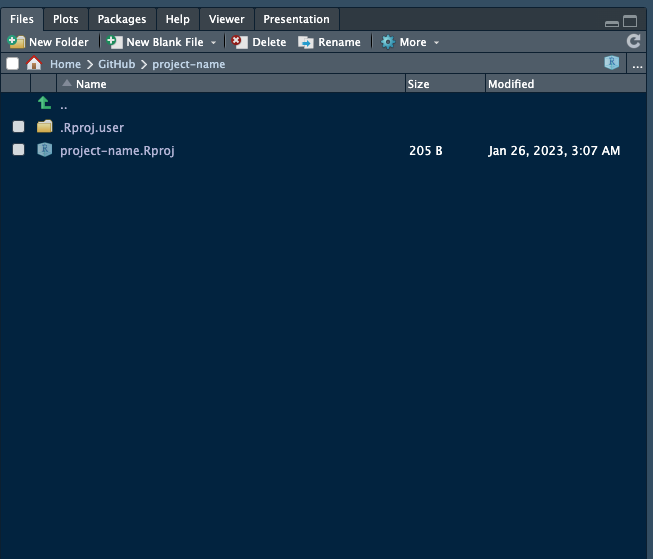

9 Initiating an R/RStudio project
Following is a diagram of the steps in initiating your own R/RStudio project.

9.1 1. Create a new project in RStudio
9.1.2 1.2 Create a New Directory
9.1.3 1.3 Select New Project as project type
9.1.4 1.4 Specify details for new project
1.4.1 Specify a project name. Best practices for naming a project are:
- Make sure that name is succinct (as short as possible while at the same time descriptive of the project);
- Don’t use spaces for your project name. If you need to separate words, use a dash or an underscore;
- Avoid using capital letters.
1.4.2 Specify a directory/location in your local machine where to place the directory of your new project
1.4.3 Decide whether to use git to version this project
Here you can decide whether you want to use git to version your project. Remember that using git doesn’t mean you have to use GitHub. git is software installed in your local machine and it versions what you have on your local machine. You don’t need GitHub or any other similar service to version your code with git in your local machine.
I would recommend that you tick this option for any new project you create so that you can version your work in your local machine even if you don’t want or decide not to use GitHub or any other remote git service.
1.4.4 Do you want to open a new session
This is by default unticked and will open the new project within the existing RStudio session (if any). This means that if you have an existing RStudio session with another project that you are working on, that project will be closed and the new project you are creating will open in the existing RStudio session.
If you need your existing RStudio session and the project within it to remain open alongside the new project you are creating, tick this box/option.
1.4.4 Click on Create New Project
Once you click on Create New Project, you will now see the new project open in RStudio.
You will also see something like below witin the file explorer pane of RStudio.

9.2 2. Structure/organise your new project appropriately
Project organisation is vital because:
- supports productivity because the different components of the project are placed in directories where they should be;
- enables clarity in communicating project structure;
- facilitates collaboration.
Organising an R project can be user- and project-dependent but there are generally accepted project organising structure that is common to most well-organised projects. Below is an example:
.
|-- my-project
|-- data
|-- output
|-- figures
|-- R
|-- my-project.Rproj
|-- analysis_workflow.R
|-- README.md 9.3 3. Start coding
This will include creating bespoke R functions (as required) and creating an Rscript for the step-by-step processes in your scientific workflow.
9.4 Next steps
The next steps will depend on whether you will use git and GitHub for versioning your project and whether or not you will work on your project as a solo scientiest or work and collaborate with other scientists.